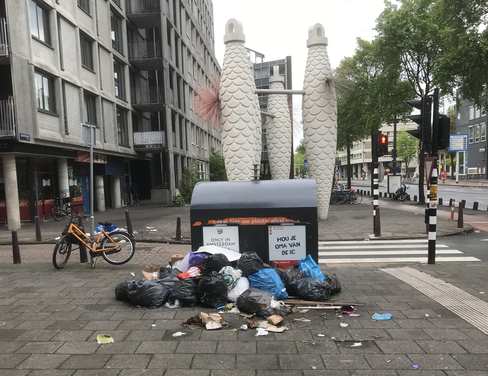
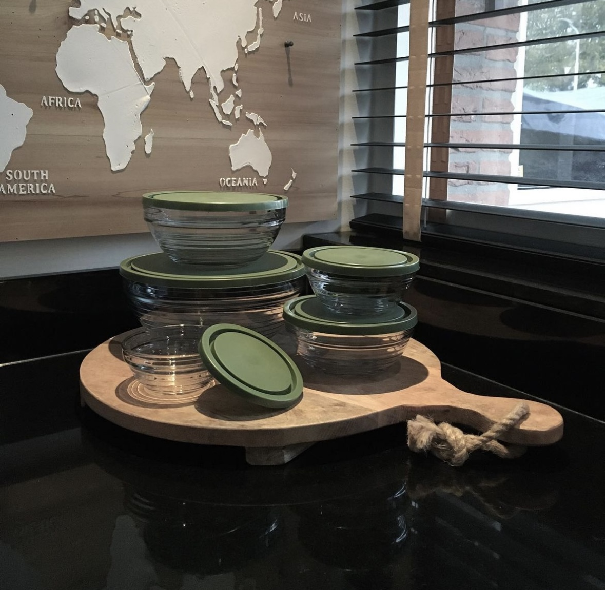

Zero Waste
In Amsterdam, de bruisende hoofdstad van Nederland, is voedselverspilling een uitdaging die onze stad en gemeenschap aangaat. Dagelijks wordt er aanzienlijk voedsel verspild, van restaurants en supermarkten tot huishoudens. Echter, Amsterdam staat ook bekend om zijn innovatieve benadering van het verminderen van voedselverspilling. Talloze initiatieven, van voedseldonaties tot bewustwordingscampagnes, bloeien hier op. Samen werken we aan een duurzamere toekomst en trachten we voedselverspilling in onze prachtige stad te verminderen. Welkom bij de beweging voor minder verspilling in Amsterdam!
Waarom moeten we voedselverspilling voorkomen?
Milieubewustzijn
Voedselverspilling heeft aanzienlijke milieueffecten. Het verspilde voedsel eindigt vaak op stortplaatsen, waar het bijdraagt aan methaanemissies, een krachtig broeikasgas. Bovendien gaat de productie van voedsel gepaard met het gebruik van natuurlijke hulpbronnen, zoals water en landbouwgrond. Het verminderen van voedselverspilling draagt bij aan het behoud van deze hulpbronnen.
Voedselzekerheid
Voedselverspilling is een ethische kwestie, vooral in een stad als Amsterdam, waar sommige mensen moeite hebben om voldoende voedsel te krijgen. Het verminderen van verspilling betekent meer voedsel beschikbaar voor mensen die het nodig hebben.
Kostenbesparing
Voedselverspilling betekent dat mensen geld verspillen aan ongebruikt voedsel. Door verspilling te verminderen, kunnen huishoudens geld besparen.
Milieudruk verminderen
Voedselproductie en -verwerking veroorzaken aanzienlijke milieudruk, waaronder ontbossing, bodemdegradatie en watervervuiling. Minder voedselverspilling betekent minder behoefte aan overmatige voedselproductie.
Bewustwording en gedragsverandering
Het verminderen van voedselverspilling in Amsterdam kan als voorbeeld dienen en mensen bewust maken van de waarde van voedsel en de noodzaak om bewuster met voedsel om te gaan.
Kortom, voedselverspilling voorkomen in Amsterdam heeft positieve effecten op het milieu, de economie, voedselzekerheid en het algemene welzijn van de stad. Het is een gezamenlijke inspanning van individuen, bedrijven en de overheid om verspilling te verminderen en een duurzamere toekomst te bevorderen.
Tips hoe je voedselverspilling kan voorkomen
Maaltijdplan
Maak uw weekmenu en boodschappenlijstje voordat u gaat winkelen. Koop alleen wat je nodig hebt en zorg ervoor dat je de ingrediënten ook daadwerkelijk gebruikt.
Bewaar voedsel op de juiste manier
Zorg ervoor dat voedsel op de juiste temperatuur wordt bewaard en gebruik luchtdichte containers voor bederfelijke artikelen. Dit verlengt de houdbaarheid.
Houd je voorraadkast en koelkast georganiseerd
Zet oude spullen vooraan zodat je ze eerst kunt gebruiken. Dit voorkomt dat voedsel achterin de koelkast verdwijnt en bederft.
Restjes invriezen
Als je merkt dat je te gaar bent, vries de restjes dan in voor later gebruik. Dit is vooral handig voor soepen, stoofschotels en sauzen.
Eet restjes
Probeer restjes in je maaltijden te verwerken. Je kunt ze bijvoorbeeld gebruiken als lunch of als basis voor nieuwe gerechten.
Wees creatief met restjes
Vind manieren om van restjes nieuwe maaltijden te maken. Verwerk bijvoorbeeld overgebleven groenten in een omelet of maak broodpudding van oud brood. Koop houdbare artikelen met mate in grote hoeveelheden en koop ze alleen in bulk als u zeker weet dat u ze zult gebruiken voordat ze bederven.
Begrijp wat de houdbaarheidsdatum betekent
Begrijp het verschil tussen een houdbaarheidsdatum en een houdbaarheidsdatum. Veel voedingsmiddelen zijn na hun houdbaarheidsdatum nog steeds veilig om te eten, zolang ze op de juiste manier worden bewaard.
Voedsel delen
Als je weet dat je te veel eten hebt gekocht of bereid, deel het dan met familie, vrienden of buren om verspilling te voorkomen.